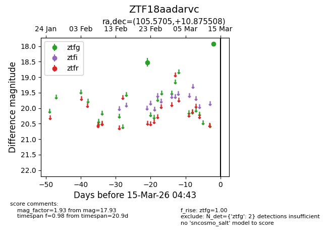
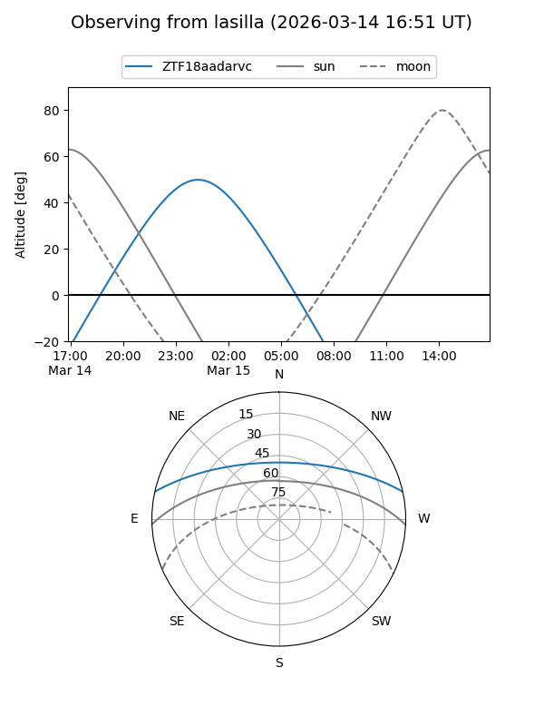
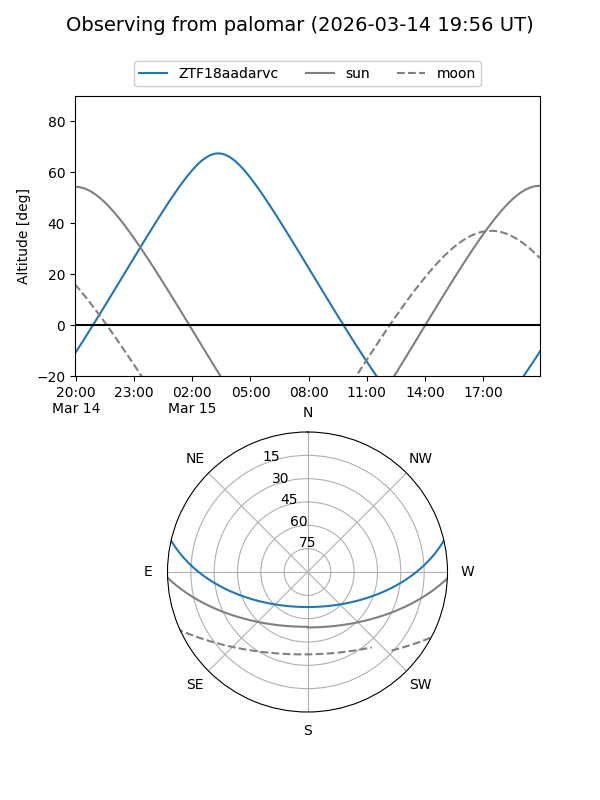

ZTF18aadarvc
Target ZTF18aadarvc at 2026-03-15 04:45
Aliases and brokers:
FINK: link
Lasair: link
ALeRCE: link
alt names
ZTF18aadarvc (ztf,fink_ztf)
Coordinates:
equatorial (ra, dec) = 105.5705,+10.87551
equatorial (HMS+DMS) = 07:02:16.92,+10:52:31.83
galactic (l, b) = (204.4241,+7.31777)
Flags:
Photometry:
last ztfg=17.93
2 ztfg detections
Lightcurve

Visibility


Additional plots